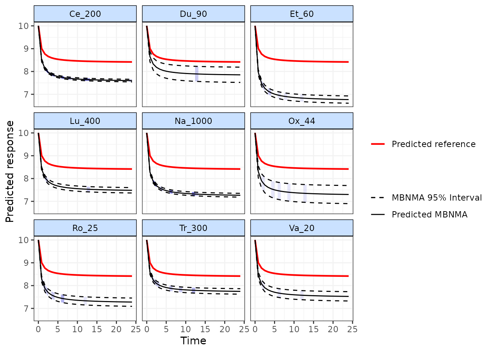
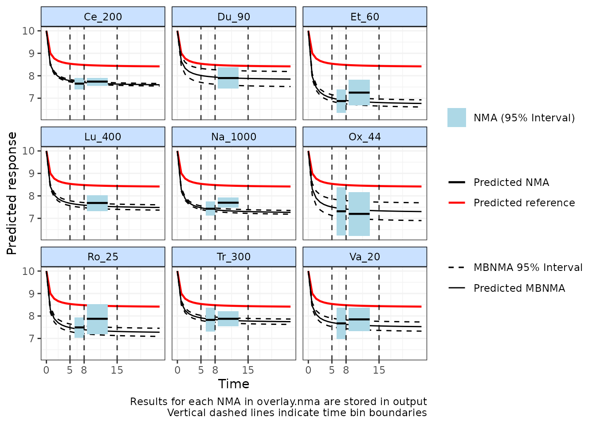
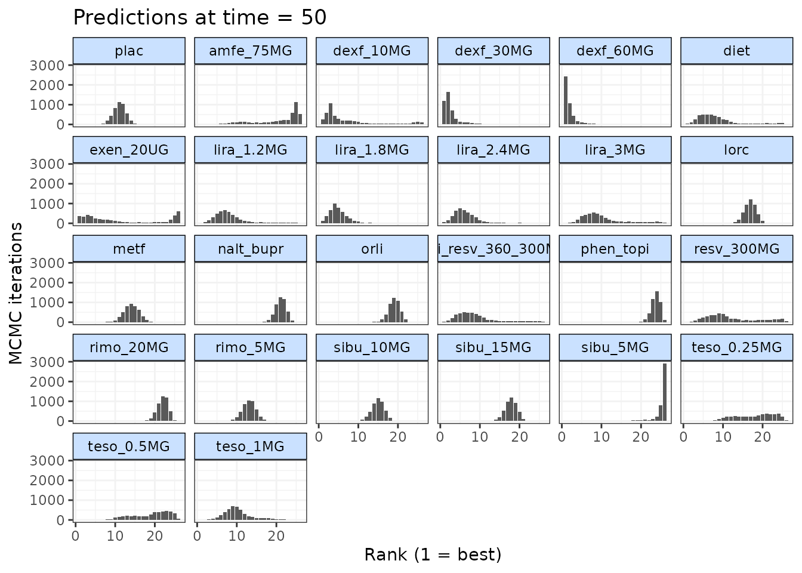

Calculating model predictions
Hugo Pedder
2025-02-03
predictions-5.RmdPrediction
After performing an MBNMA, predictions can be calculated from the
parameter estimates using predict() on an
"mbnma" object. A number of important parameters need to be
identified to make robust predictions. However, default values can be
used that set values of zero for the reference treatment baseline and
time-course parameters which indicates that mean differences / relative
treatment effects should be estimated. For further information the help
file can be accessed using ?predict.mbnma.
E0 (time=0)
One key parameter is E0, which defines what value(s) to
use for the predicted mean at time = 0. A single numeric value can be
given for E0 to indicate a deterministic value, or a
function representing a random number generator (RNG) distribution in R
(stochastic) (e.g. E0 = ~rnorm(n, 7, 0.2). These values can
be identified for the population of interest from external data
(e.g. observational/registry).
Baseline (reference treatment) time-course
The more challenging parameter(s) to identify are those for the
network reference treatment time-course, supplied to
predict() in the ref.resp argument. For
estimating mean differences / relative treatment effects over time this
does not need to be specified since typically in an MBNMA, relative
effects are estimated and the network reference effect is modeled as a
nuisance parameter.
However, for predicting mean responses over time we need to provide
an input for the network reference treatment effect for all time-course
parameters modeled using pool="rel" so that we can apply
the relative effects estimated in our model to it. There are two options
for providing these values.
The first approach is to give values for each time-course parameter
modeled using relative effects to ref.resp. This is given
as a list, with a separate named element for each time-course parameter.
Each element can take either a single numeric value (deterministic), or
a function representing a random number generator distribution in R
(stochastic).
# Run an Emax time-course MBNMA using the osteoarthritis dataset
mbnma <- mb.run(network.pain,
fun=temax(pool.emax="rel", method.emax="common",
pool.et50="abs", method.et50="common"),
rho="dunif(0,1)", covar="varadj")
# Specify placebo time-course parameters
ref.params <- list(emax=-2)
# Predict responses for a selection of treatments using a stochastic E0 and
# placebo parameters defined in ref.params to estimate the network reference treatment effect
pred <- predict(mbnma, treats=c("Pl_0", "Ce_200", "Du_90", "Et_60",
"Lu_400", "Na_1000", "Ox_44", "Ro_25",
"Tr_300", "Va_20"),
E0=~rnorm(n, 8, 0.5), ref.resp=ref.params)
print(pred)The second is to assign ref.resp a data frame composed
of single-arm studies of the network reference treatment. A separate
synthesis model for the reference treatment effect will then be run, and
the values from this used as the prediction reference treatment effect.
This dataset could be a series of observational studies measured at
multiple follow-up times that closely match the population of interest
for the prediction. Alternatively it could be a subset of data from the
original RCT dataset used for the MBNMA model (though this may be less
generalisable to the population of interest).
# Generate a dataset of network reference treatment responses over time
placebo.df <- network.pain$data.ab[network.pain$data.ab$treatment==1,]
# Predict responses for a selection of treatments using a deterministic E0 and
#placebo.df to model the network reference treatment effect
pred <- predict(mbnma, treats=c("Pl_0", "Ce_200", "Du_90", "Et_60",
"Lu_400", "Na_1000", "Ox_44", "Ro_25",
"Tr_300", "Va_20"),
E0=10, ref.resp=placebo.df)
print(pred)It is also possible specify the time points for which to make
predictions (times), given as a vector of positive numbers.
If left as the default then the maximum follow-up in the dataset will be
used as the upper limit for the range of predicted time-points.
Exploring predictions
An object of class "mb.predict" is returned, which is a
list of summary tables and MCMC prediction matrices for each treatment,
in addition to the original mbnma object. The
summary() method can be used to print mean posterior
predictions at each time point for each treatment.
Predicted values can also be plotted using the plot()
method on an object of class("mb.predict"). Within the
default arguments, the median predicted network reference treatment
effect is overlaid on the predictions for each treatment. Setting
overlay.ref = FALSE prevents this and causes the network
reference treatment effect to be plotted as a separate panel. Shaded
counts of observations in the original dataset at each predicted time
point can be plotted over the 95% CrI for each treatment by setting
disp.obs = TRUE.
plot(pred, overlay.ref=TRUE, disp.obs=TRUE)
This can be used to identify any extrapolation/interpretation of the time-course that might be occurring for a particular treatment, and where predictions might therefore be problematic.
To illustrate a situation in which this could be very informative, we can look at predictions for a quadratic time-course function fitted to the Obesity dataset:
# Fit a quadratic time-course MBNMA to the Obesity dataset
network.obese <- mb.network(obesityBW_CFB, reference = "plac")
mbnma <- mb.run(network.obese,
fun=tpoly(degree=2,
pool.1 = "rel", method.1="common",
pool.2="rel", method.2="common"))
# Define stochastic values centred at zero for network reference treatment
ref.params <- list(beta.1=~rnorm(n, 0, 0.05), beta.2=~rnorm(n, 0, 0.0001))
# Predict responses within the range of the data
pred.obese <- predict(mbnma, times=c(0:50), E0=100, treats = c(1,4,15),
ref.resp=ref.params)
# Plot predictions
plot(pred.obese, disp.obs = TRUE)As you can see, within the limits of the observed data the predicted
values appear reasonable. However, extrapolation beyond this for
dexf_30MG leads to some rather strange results, suggesting
an unrealistically huge increase in body weight after 50 weeks of
treatment. On the other hand, the predicted response at 50 weeks
follow-up in treatment 15 is within the limits of the observed data and
so are likely to be more justifiable.
Plotting “lumped” NMA results
As a further addition to the plots of MBNMA predictions, it is
possible to add predicted results from an NMA model or multiple “lumped”
NMA models performed a different time “bins” (specified in
overlay.nma), time periods within which we are assuming
treatment effects are constant over time. This is similar to the output
generated by binplot(). Either a "random" (the
default) or "common" effects NMA can be specified, and
model fit statistics are reported below the resulting plot.
This can be useful to assess if the MBNMA predictions are in
agreement with predictions from lumped NMA models over a specific set of
time-points, and can be a general indicator of the fit of the
time-course model. However, it is important to note that the NMA model
is not necessarily the more robust model, since it ignores potential
differences in treatment effects that may arise from lumping time-points
together. The wider the range specified in overlay.nma, the
greater the effect of lumping and the stronger the assumption of
similarity between studies.
The NMA predictions are plotted over the range specified in
overlay.nma as a horizontal line representing the posterior
median, with the 95%CrI shown by a shaded rectangle. The NMA predictions
in theory represent those for any time-points within this range
since they lump together data at all these time-points, though the width
(x-axis) of the shaded rectangle represents the range of time-points for
studies included in each time bin. Predictions for treatments that are
disconnected from the network reference treatment at data points
specified within overlay.nma cannot be estimated so are not
included.
# Overlay predictions from lumped NMAs between 5-8 and between 8-15 weeks follow-up
plot(pred, overlay.nma=c(5,8,15), n.iter=20000)
#> Reference treatment in plots is Pl_0
#> Running overlay.nma for time=5 and time=8
#> Running overlay.nma for time=8 and time=15
Ranking
Predictions can also be ranked, allowing for ranking of predicted
efficacy at a single time-point. We will illustrate this by ranking mean
differences from the network reference treatment (i.e. by setting
ref.resp=NULL and E0=0).
# Predict responses within the range of data
pred.obese <- predict(mbnma, times=c(0:50),
E0=0, ref.resp = NULL)
#> Priors required for: mu.1, mu.2
#> Success: Elements in prior match consistency time-course treatment effect parameters
# Rank predictions at 50 weeks follow-up
ranks <- rank(pred.obese, time=50)
summary(ranks)
#> Length Class Mode
#> param 1 -none- character
#> summary 8 data.frame list
#> prob.matrix 676 -none- numeric
#> rank.matrix 117000 -none- numeric
#> cum.matrix 676 -none- numeric
#> lower_better 1 -none- logical
plot(ranks)
The results indicate that dexf_60MG (Dexfenfluramine 60mg) is the highest ranked treatment.